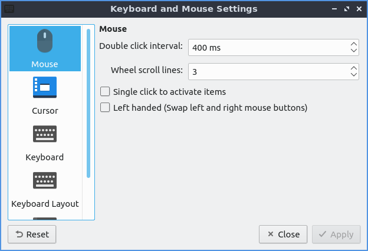
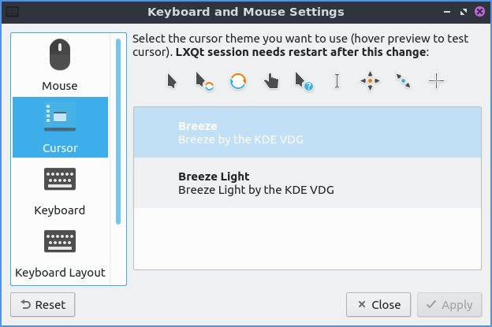
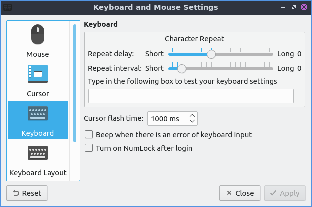
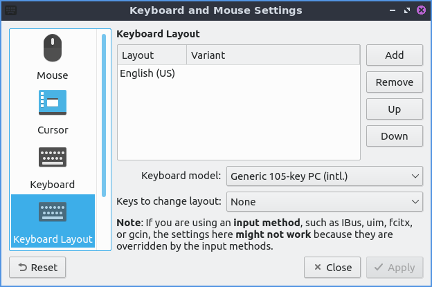
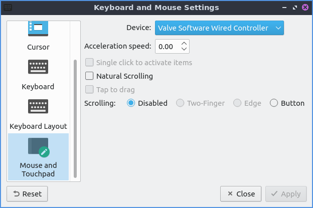

Chapter 3.2.8 Keyboard and Mouse¶
Keyboard and Mouse is the program to change the behavior of your keyboard, mouse, and touchpad.
Usage¶
The Mouse tab provides settings for how fast the mouse moves, scrolls, and double clicks. To change how much time you have to have a click a double click change the Double click interval. The Wheel scroll lines field changes how many lines of text you scroll when you use the scrollwheel. If you wish to only have to tap once to perform a left click check the Single click to activate items checkbox. If you wish to swap left and right buttons on your mouse check the Left handed checkbox. Note that this also swaps the buttons on a touchpad. The settings should apply immediately so make sure the mouse moves how you want it.
If you do not like the new settings press the Reset button to go back to your previous settings. If you want to close Keyboard and Mouse press the Escape key or press the Close button. To have your changes take place press the Apply button.
The Cursor tab on the left lets you change your cursor theme which is quite useful if you are say running virtual machines so the cursor does not look the same in the host and the guest. To change a theme scroll down to which theme you want under preview but you will have to logout and log back in again for this to fully take effect. To change the size of the cursor change the Size field.
The Keyboard tab has settings for changing keyboard settings. If you want to change how quickly it takes to repeat a keyboard keypress move the slider to the right on the Repeat delay to take longer to repeat key presses or to the left to decrease the time it takes to repeat. The Repeat interval is how quickly after the repeat delay the held down key will repeat itself which moving to the right will make it take longer to increase while to the left will make it take a short time to repeat itself. To test your keyboard settings type in the Type in the following box to test your keyboard settings text box. To change how fast the keyboard flashes change the Cursor flash time field. The Turn on numlock after login checkbox will make numlock automatically be on after you login.
The Keyboard Layout tab has settings to add a new keyboard layout. In the top center of the window is a listing of your current keyboard layout and any variant applied to it. To add a keyboard layout press the Add button. To remove the keyboard layout left click on the keyboard and press the Remove button. To move a keyboard layout up or down press the Up or Down buttons. To change your keyboard model in choose your keyboard model in the Keyboard model drop down. To set the key to change between different keyboard layouts change the Keys to change layout menu.
The Mouse and Touchpad tab has settings for touchpads. To select which touchpad to change settings use the Device drop down menu. To change how fast your touchpad accelerates use the Acceleration speed field. To tap the touchpad once to register a left click check the Tap to Click checkbox. To reverse the scrolling direction check the Natural Scrolling checkbox this kind of scrolling is common on devices with touchscreens. To tap on the touchpad to drag items instead of having to click on the button and use the touchpad at the same time check the Tap and drag checkbox. To disable scrolling by the touchpad press the Disabled button to the right of Scrolling. To use two fingers to scroll on the touchpad press the Two-Finger button. To use the edge of the touchpad to scroll press the Edge button.
Version¶
Denios-OS ships with version 1.1.0 of Keyboard and Mouse.
How to Launch¶
To launch Keyboard and Mouse use menu . In LXQt Configuration Center press the Keyboard and Mouse button or from the command line run
lxqt-config-input
The icon for Keyboard and Mouse is a black keyboard.